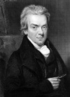

On iki yaşındaki William Wilberforce’un (1759–1833) annesi oğluyla ilgili haberlerden dolayı dehşete düşmüştü. İki yıl önce akrabaları ile yaşaması için gönderdiği oğlu çok değişmiş ve evanjelik bir Hıristiyan olarak annesini hayal kırıklığına uğratmıştı.

Endişeli anne, halası ve amcasının kendisine aşıladığı dini coşkudan kurtulması için oğlunu eve geri çağırdı. Wilberforce, annesinin ailesi için “hiçbir dindar ebeveyn çocuklarına dini duyarlılık kazandırmak için onların beni dünyanın zevkleri ve güzellikleriyle tanıştırmak yolunda harcadığı kadar çaba harcamamıştır,” diyecekti.
Ne var ki iş işten geçmişti. Derin dini inancı ile motive olan Wilberforce, İngiltere’nin önde gelen dini reformcularından biri olacaktı. Aynı zamanda İngiltere’de köleliğin yasaklanmasının destekçilerinden biriydi. Elli yıl boyunca parlamento üyesi oldu. Köleliği yasaklayan kanun geçtikten üç gün sonra öldü.
Wilberforce İngiltere’nin liman şehri Hull’da doğdu. Babası varlıklı bir kereste tüccarıydı. Onun ölümünün ardından iki yılını amcası ve halası ile geçirdi. Evanjelik Hıristiyanlığı onlardan öğrenmişti. Babasından kalan miras sayesinde geçim derdi olmadı. Cambridge’ten mezun olduktan sonra politikaya atıldı.
İngiltere 18.yy’ın en büyük köle ticareti merkeziydi. Kölelik sayesinde elde edilen büyük servet, Liverpool gibi liman şehirlerini metropollere dönüştürmüştü. Başlarda Wilberforce’un kampanyasına karşı büyük bir muhalefet oluştu: Tüccarlar köleliğin kaldırılmasının ekonomiye derin bir zarar vereceğini söylüyordu. Bu durum, kolonilerden İngiltere’ye akan kârı azalacaktı.
1780 yılında parlamentoya girişinin ardından Wilberforce köleliğin kaldırılması için bir dizi yasa önerisi sundu. 1793 yılında neredeyse başarılı oluyordu. Ancak aynı yılın sonlarına doğru İngiltere Fransa’ya savaş ilan edince yasa yapıcıların dikkati dağıldı. Bu konudaki ilk büyük başarıya 1807 yılına kadar ulaşılamayacaktı. Bu tarihte gelişen kölecilik karşıtı hareketin baskısı altında kalan parlamento, köle ticaretini yasakladı.
Köle ticareti yasaklansa da kölelik 1833 yılına kadar İngiltere’de varlığını sürdürdü. 1825 yılında Wilberforce parlamentodan ayrıldı. Oylama sonuçları ona ölüm döşeğindeyken söylendi. Londra’da öldüğü sırada yetmiş üç yaşındaydı.
Ek Bilgiler
1- Wilberforce’un yaşam öyküsü 2007 yılında “Amazing Grace” adıyla beyazperdeye aktarıldı. Michael Apted (1941–) tarafından yönetilen filmde Ioan Gruffudd (1973–) başrolde oynuyordu.
2- Köleliğin kaldırılması Wilberforce’un parlamentodaki tek icraatı değildi. Aynı zamanda hayvan haklarının katı bir destekçisiydi. Hayvanlara zulmün engellemesi için Royal Society’i kurmuştu.
3- Rüşvet, 18. yy İngilteresi’nde seçimlerin önemli bir unsuruydu. 1780 yılında ilk kez parlamentoya aday olduğunda Hull’da kendisine oy verecek her kişiye iki guinea (yaklaşık 4 bin dolar) önermişti.